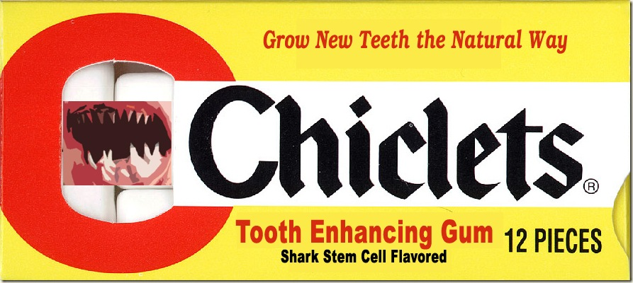
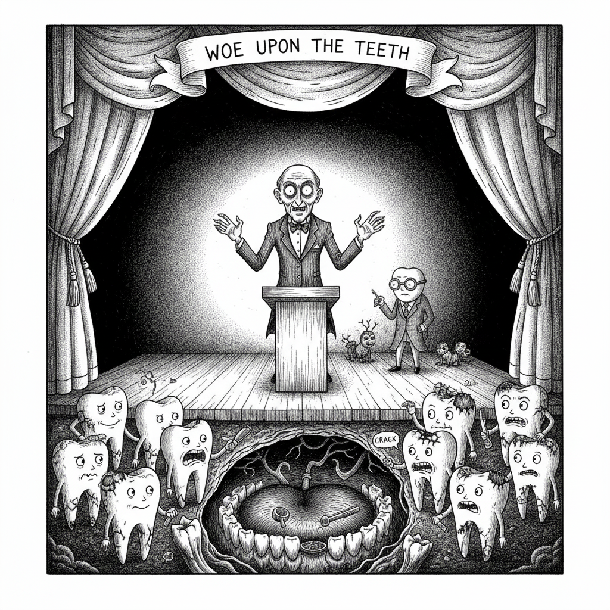

Miracle Gum Grows New Teeth

{kind=link}


Chiclets, the candy coated gum once widely available in the US is set to make a comeback after many years of obscurity. Cadbury Adams owners of the Chiclets brand are capitalizing on recent advances in stem cell research to revitalize their product. The new product, simply called Chiclets Tooth Enhancing Gum is built on premise that sharks have multiple rows of regenerating teeth, a trait humans do not share.
Cadbury has combined the fetal stem cells of sharks with a gum delivery system that allows human teeth and gum cells to take on the regenerative properties of a great white. For humans who have gone without teeth or are losing teeth this is a life changing product. In some consumers, the teeth may seem more shark-like than human, but one shark toothed test-user claims “You can chew through a rubber tire with these new choppers if you wanted.”
Normally a product of this type would require FDA approval, but since Cadbury is marketing this as a gum and not a drug, it will be available to the public without prescription in March 09.
Related posts
The Judgement of the Teeth
and lo the teeth rose gnashing in mouths the molars ground crushing all between them and food plaque spread like…

Woe Upon the Teeth
but woe cursed are the teeth they bite without warning they chew without mercy cursed are the molars grinding endlessly…

Why Sharp Teeth BJs Are Worse than Not Getting a Rose
"Ask the Doctor” where readers ask questions of the world renounced general practitioner Dr. Charles V. Fullerton Dear Dr. When…

Why Do People Think Blue Teeth Are a Good Idea?
“Ask the Doctor” where readers ask questions of the world renounced general practitioner Dr. Charles V. Fullerton. Dear Black and…